Anexo I · Transcrição
Registro da conversa na íntegra, anexo à ata {{BPL-TIPO-ATA-AAMMDDHHMM}}
{{BPL-TIPO-TRC-AAMMDDHHMM}} · {{DD/MM/AAAA}}
Sobre esta transcrição
Este é o registro do que foi dito no encontro, do começo ao fim. Ele acompanha a ata para quem quiser voltar a algum trecho da conversa com as palavras originais.
A conversa foi captada e transcrita automaticamente pelo Gemini Notes. O texto passou
por uma conferência da equipe para corrigir nomes, termos técnicos e trechos que a
ferramenta não captou bem — o conteúdo das falas foi preservado como dito.
Transcrição automática erra: pode trocar palavras parecidas, juntar falas
sobrepostas ou marcar quem falou de forma equivocada. Onde houver diferença entre
este documento e a ata, vale o que está na ata, que passou por
revisão humana completa. Se você encontrar algum trecho que não reflete o que foi
dito, é só avisar a gente.
{{BPL-TIPO-ATA-AAMMDDHHMM}}
{{0h00}}
Lisandra Lencina
Correções aplicadas ao texto automático. Quando não houver nenhuma, escrever "Nenhum ajuste necessário".
{{BPL-TIPO-TRC-AAMMDDHHMM}} · {{DD/MM/AAAA}}
A conversa
Abertura · {{HH:MM}}
{{Assunto da pauta}} · {{HH:MM}}
Guardamos a conversa inteira para que nada importante dependa só da memória.
Fale com a gente
Lisandra Lencina
lisandra.lencina@bplen.com
+55 11 94515 2088
Este documento
{{BPL-TIPO-TRC-AAMMDDHHMM}}
Anexo I da ata {{BPL-TIPO-ATA-AAMMDDHHMM}}
{{00}} páginas
Transcrição de circulação restrita às pessoas que participaram do encontro. Por conter falas na íntegra, pedimos cuidado redobrado no compartilhamento. Os dados pessoais aqui registrados são tratados conforme a Lei n. 13.709/2018, e qualquer participante pode pedir a revisão ou a exclusão de trechos que lhe digam respeito.